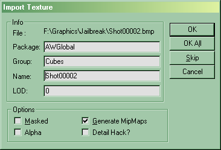

Import The Texture
This is a Basic Procedure tutorial page. It explains how to perform a single procedure which is required in many different contexts.
Texture requirements
The texture file you are trying to import must satisfy certain requirements. These are:
UT2003 and newer
- A power-of-two number of pixels across (64x128, 256x256, ...) up to 2048x2048.
- saved in .pcx, .bmp, targa, DXT or UPaint file format
- 8-bit indexed color (256 color indexed) for PCX; 24-bit or 32-bit BMP, TGA or DDS
UT
- A power-of-two number of pixels across (64x128, 256x256, ...) up to 1024x1024.
- Using 8-bit color (256 color indexed) .pcx or .bmp format.
Importing
In the Texture Browser, do Texture Browser Menu → File → Import. Find the directory containg your image file, then select it and click Open. A window will appear asking for specifics on how to import the file:

Import texture window |
You'll need to supply the following details:
Info
- File
- you can't edit this, it just tells you the file currently being processed. (I'm guessing this is useful when you import a batch of files)
- Package
- the name of the package to import the texture into. If you give...
- the name of an existing file, the texture will be added to that package. But Do Not Alter Default Packages!
- the name "MyLevel", the texture will be embedded in the current map. See MyLevel for more on this.
- something else, a new package will be created. You'll need to save it.
- Group
- textures can be organized into groups within a package (eg "Walls", "Floors"). This is just for convenience. Type the name of an existing group, or a new one.
- Name
- just in case you want to change the name of the texture, you can do so with this option.
- LOD
Options
- Masked
- sets the texture to be masked (how?). see Color Blending.
- Alpha
- Generate MipMaps
- MipMaps are basically smaller versions of your textures. This is rendering method to not only increase FPS but to reduce pixel shimmering on the screen. If you have a large texture but it is only on a small area of the screen the texture can shimmer because the sampling of that texture isn't accurate enough to represent it on the pixels given to the texture. If you import large textures (1024 X 1024 and above) and don't generate mipmaps, you may see shimmering effects when you use the texture ingame. More info: MipMap
- Detail Hack?
Related Topics
- Texture Topics
- more on parts of the UnrealEd Interface
- more on Texture Import And Export, including a troubleshooting checklist
- Create A Material
Category Mapping
Category Tutorial
Category To Do – fill in the property details
Discussion
UT
Q. What if you want to import a texture that came with the game? ucc.exe can export the pcx files stored in the utx files, but should the original package name be used or MyLevel? I've had to create mip maps for the texture to appear in the texture browser (for at least a few, possibly all, textures); however, some textures (eg at least one of skarrj.utx) won't save nor appear in the game, but (iirc) WILL appear in a t3d export...
Should ALL textures be imported into MyLevel embeding them into the map even if they appear in a default package (eg city.utx)?
As far as attribution is concerned, is there a texture comment field or something to mention that the bundled textures were used (or something to that effect)?
Tarquin: don't understand the question. Why import a texture already in a default package?
JTMILLER: i think he was asking if he should export the default textures and then reimport them into myLevel mabie for speed issues, dont worry mr Q. it loads them from the other packages just as fast.